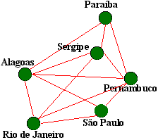
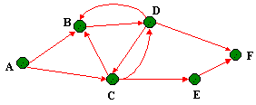

| Os grafos acham sua importância como modelos para muitos tipos de processos ou estruturas. Cidades e suas avenidas conectados formam um grafo, como fazem os componentes num circuitos com conecções entre eles. Uma combinação química orgânica pode ser considerado um grafo com os átomos sendo os vértices e os laços entre eles como extremidades. As pessoas vivendo em uma cidade podem ser considerado como vértices de um grafo com o relacionamento se familiariza com descrevendo as extremidades. Pessosas trabalhando em uma corporação formam um grafo orientado com a relação “supervisa” descrevendo as extremidades. As mesmas pessoas podiam também ser consideradas como um grafo não orientado, com diferentes extremidades descrevendo relações “trabalha com". Vejamos mais alguns exemplos: |
|  Um grafo pode ser as rotas que os aviões alguma companhia fazem para dislocar pessoas de população de uma cidade distante a outra. Aqui no exemplo, a população do estado de Alagoas pode pegar um vôo tanto para o Rio de Janeiro como para São paulo, Pernambuco etc. Agoa para irmos de Sergipe para São Paulo, temos que antes fazermos uma escala em Alagoas para ai sim, chegar-mos em São Paulo. |
|  Sabemos que uma rede de computadores são as comunicações existentes entre as máquinas. Cada qual que requisita algo a outro e assim por diante. Um grafo também pode ser a representação de uma rede de computadores com as arestas representando o pedido e o recebimento de informações. O computador A pede informações tanto a B como a C, o computador C requisita algo para D que recebe informações de B. Assim por diante. |